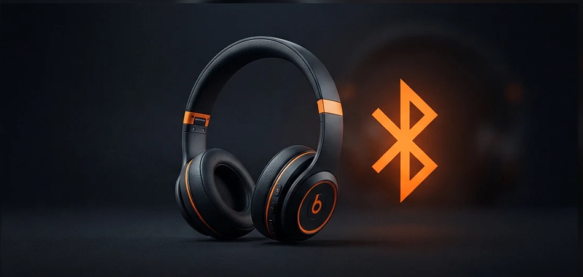

MATERIAL TÉCNICO

Qualidade do áudio Bluetooth: codecs, transmissão e equipamentos
Postado em: 21/11/2026 às 00:00
Como funciona o áudio Bluetooth?
O Bluetooth transmite áudio sem a necessidade de cabos, utilizando ondas eletromagnéticas na
faixa de 2,4 GHz.
Para transmitir uma música, o dispositivo de origem (celular ou computador) codifica e
comprime o áudio. Os dados são enviados ao fone ou caixa de som, que realiza a decodificação
para reproduzir o som.
Esse processo utiliza um codec, responsável por codificar e decodificar as informações
sonoras.
A qualidade da transmissão depende principalmente de:
- Codec utilizado.
- Compatibilidade entre os dispositivos.
- Taxa de transmissão (bitrate).
- Estabilidade da conexão.
- Qualidade do equipamento de reprodução.
O perfil Bluetooth responsável pela transmissão convencional de áudio estéreo é o A2DP
(Advanced Audio Distribution Profile).
Comparação dos principais codecs
Os codecs determinam como o áudio será comprimido e transmitido. Cada tecnologia apresenta características próprias de qualidade, eficiência e compatibilidade.
| Codec | Taxa de transmissão | Característica |
| SBC | Variável | Padrão básico e amplamente compatível |
| AAC | Variável | Boa eficiência de compressão |
| aptX | Até 384 kbps | Boa qualidade e baixa complexidade |
| aptX HD | Até 576 kbps | Suporta áudio de até 24 bits/48 kHz |
| LDAC | 330, 660 ou 990 kbps | Transmissão em taxas elevadas |
| aptX Lossless | Até aproximadamente 1.200 kbps | Pode transmitir áudio de CD sem perdas |
| LC3 | Variável | Maior eficiência e menor consumo no Bluetooth LE Audio |
Principais diferenças:
- SBC: possui ampla compatibilidade, sendo o codec obrigatório para áudio A2DP.
- AAC: oferece boa compressão e é bastante utilizado em dispositivos Apple.
- aptX: desenvolvido pela Qualcomm, busca equilibrar qualidade e latência.
- aptX HD: permite maior resolução de áudio, mas ainda utiliza compressão com perdas.
- LDAC: desenvolvido pela Sony, permite taxas de transmissão mais elevadas, chegando a 990
kbps.
- aptX Lossless: pode transmitir áudio equivalente à qualidade de CD sem perdas, em
condições compatíveis.
- LC3: associado ao Bluetooth LE Audio, oferece boa qualidade com menor consumo de dados e
energia.
Interferências na transmissão
O Bluetooth utiliza a frequência de 2,4 GHz, compartilhada com equipamentos como roteadores
Wi-Fi.
Isso pode provocar:
- Interrupções na reprodução.
- Perda de pacotes.
- Instabilidade na conexão.
- Redução da taxa de transmissão.
Equipamentos recomendados

Fones Bluetooth
Priorizar modelos com suporte a LDAC, aptX Adaptive ou aptX Lossless, bons drivers e processamento de áudio.
Marcas: Sony, Sennheiser e JBL.
Transmissores Bluetooth USB
Permitem transmitir áudio de computadores e outros equipamentos. É necessário verificar os codecs suportados e a compatibilidade com o fone.

Caixas de som Bluetooth
Priorizar boa construção acústica, drivers de qualidade, estabilidade de conexão e suporte a codecs adequados.
Marcas: JBL, Sony e Edifier.Referências bibliográficas
Fontes utilizadas na elaboração dos nossos conteúdos.
Qualidade do áudio Bluetooth
-
ADRIANO, Bruno Tanaka; DIORIO, Gabriel Cristofoletti.
Transmissão de áudio sem fio em tempo real por Bluetooth utilizando o
ESP32.
UTFPR, 2021.
Acessar estudo -
BLUETOOTH SIG.
Performance Characterization of the Low Complexity Communication Codec
(LC3).
2023.
Acessar estudo -
TRAINOR, David.
Wireless Transmission of Audio Using Adaptive Lossless Coding.
Audio Engineering Society, 2009.
Acessar artigo -
AFANEH, Mohammad.
A Technical Overview of LC3.
Bluetooth SIG, 2020.
Acessar artigo
Do sulco ao bit: qual é a diferença entre o som analógico e o digital?
Projeto: Projeto de Extensão BEAT — Do Vinil ao Streaming · Divulgação científica
Você já ouviu alguém dizer que “o vinil tem um som mais quente” ou que “o digital é mais limpo”? Essas frases aparecem em rodas de conversa, em lojas de discos e em fóruns de áudio, mas por trás delas existe ciência bem concreta. Neste texto, vamos entender como o som é guardado de duas maneiras muito diferentes, a analógica e a digital, e o que muda (e o que não muda) quando escutamos música em um disco de vinil ou em um aplicativo de streaming.
Antes de tudo: o que é o som?
O som é uma vibração que viaja pelo ar em forma de onda. Duas características dessa onda nos
interessam:
- Frequência: quantas vibrações acontecem por segundo, medida em hertz (Hz). Ela define se o
som é grave ou agudo. O ouvido humano percebe, em média, de 20 Hz a 20.000 Hz (20 kHz).
- Amplitude: a intensidade da vibração. Ela define se o som é fraco ou forte, ou seja, o
volume.
Para guardar um som, é preciso registrar essa onda de algum jeito. Foi aí que surgiram dois caminhos.
Som analógico: uma cópia contínua da onda
A palavra “analógico” vem de analogia. Na gravação analógica, o registro é um “análogo” físico da onda sonora original. No disco de vinil, a onda vira um relevo microscópico no sulco, e a agulha, ao percorrê-lo, vibra de forma parecida com o som gravado. Na fita cassete, a onda vira variações na magnetização da fita.
O ponto-chave é que o sinal analógico é contínuo: ele pode assumir qualquer valor, sem saltos. Pense em uma rampa suave. Durante cerca de um século, esse foi o único jeito prático de gravar e reproduzir som.
A contrapartida é que o meio físico deixa suas marcas. Chiado de fita, estalos, pequenas oscilações de velocidade do motor e o desgaste do material se misturam ao som. Cada reprodução de um vinil gasta um pouco o disco, e cada cópia de uma fita carrega o ruído da anterior.
Som digital: a onda transformada em números
No som digital, a onda é convertida em números. Isso acontece em duas etapas:
- Amostragem: a amplitude da onda é medida em intervalos de tempo muito pequenos e
regulares. Em um CD, são 44.100 medições por segundo.
- Quantização: cada medição é arredondada para o valor mais próximo de uma escala finita,
guardado em bits. Com 16 bits, existem 65.536 níveis possíveis.
Em vez de uma rampa, imagine uma escada com degraus tão pequenos que o ouvido não percebe. Ou pense em um filme: ele é feito de quadros separados, mas, passando rápido, nossos olhos veem movimento contínuo.
Pode parecer que “picotar” o som faz perder informação, mas existe um resultado matemático, o teorema de Nyquist–Shannon, que diz que uma onda pode ser reconstruída com exatidão se for amostrada a uma taxa maior que o dobro da sua maior frequência. Como o ouvido humano vai até cerca de 20 kHz, os 44,1 kHz do CD cobrem toda a faixa audível.
Na hora de ouvir, o caminho se inverte: um componente chamado conversor digital-analógico (DAC) transforma os números de volta em sinal elétrico, que move o alto-falante ou o fone. Ou seja, o som que chega ao nosso ouvido é sempre analógico. O que muda é como ele foi guardado e transportado até ali.
Frente a frente
- Natureza do sinal: o analógico é contínuo; o digital é discreto (feito de amostras).
- Ruído: no analógico, o ruído vem do meio físico (chiado, estalos, desgaste). No digital,
existe um pequeno ruído de quantização, que diminui conforme aumentamos os bits: cada bit
a mais acrescenta cerca de 6 dB de faixa dinâmica.
- Faixa dinâmica (diferença entre o som mais fraco e o mais forte que o sistema consegue
representar): um sistema de 16 bits chega a cerca de 96 dB em teoria. Medições apontam algo
entre 60 e 70 dB para o vinil e entre 50 e 75 dB para fitas cassete de consumo.
- Cópias: copiar uma fita analógica acumula ruído a cada geração. Uma cópia digital pode
ser idêntica ao original, sem perda de qualidade.
- Durabilidade: discos de vinil e fitas se desgastam com o uso, e mídias digitais como o
CD também envelhecem. Já um arquivo digital pode ser copiado várias vezes para
preservá-lo.
- Flexibilidade: o som digital pode ser editado, processado por computador (o chamado
Processamento Digital de Sinais), compactado e enviado pela internet. Foi isso que abriu
caminho para o streaming.
Então, qual soa melhor?
A resposta honesta é: depende. Do ponto de vista técnico, o digital tem vantagens que podem ser medidas, como baixo ruído, ausência de desgaste na leitura e cópias fiéis. Defensores do digital costumam citar testes cegos, nos quais os ouvintes não sabem qual formato estão escutando, para argumentar que muitas diferenças percebidas vêm de expectativa e das imperfeições do analógico.
Já quem prefere o analógico costuma descrever um som mais “rico”, “natural” ou “quente”. Parte dessa sensação pode estar justamente nas pequenas distorções e saturações próprias de discos e fitas, que muita gente acha agradáveis. Além disso, ouvir vinil é uma experiência: tirar o disco da capa, apoiar a agulha, virar o lado. Esse lado cultural e afetivo pesa muito, e não há nada de errado nisso.
Outro ponto importante: o formato é só uma parte da história. A qualidade da gravação, da mixagem, da masterização e do equipamento de reprodução costuma pesar tanto quanto saber se o som é analógico ou digital. Hoje, aliás, os dois mundos se misturam, e muitas gravações passam por etapas analógicas e digitais antes de chegar até nós.
E há um detalhe: o digital que ouvimos no streaming geralmente passa por compressão de dados, que reduz o tamanho do arquivo descartando informações menos perceptíveis. Esse é o assunto de um dos próximos textos do projeto.
Para pensar
- Se o som que chega ao nosso ouvido é sempre analógico, onde exatamente está a diferença
entre os dois formatos?
- Por que será que o vinil voltou a ganhar espaço mesmo com tanta praticidade no
digital?
- O que se perde (e o que se ganha) quando trocamos um disco físico por uma playlist?
Referências bibliográficas
Fontes utilizadas na elaboração dos nossos conteúdos.
Do sulco ao bit: qual é a diferença entre o som analógico e o digital?
-
MOON AUDIO.
Analog vs Digital Music: The Enduring Appeal of Analog Sound.
Acessar artigo -
MOON AUDIO.
Vinyl vs. Streaming: The Debate Over Audio Quality.
Acessar artigo -
ADORAMA.
Analog vs Digital Audio: What’s the Difference?
Acessar artigo -
WIKIPEDIA.
Comparison of analog and digital recording.
Acessar artigo -
HARDWARE.COM.BR.
Fatiando o som.
Acessar artigo -
HD PRO (MEDIUM).
The “Analog vs. Digital” Debate.
Acessar artigo